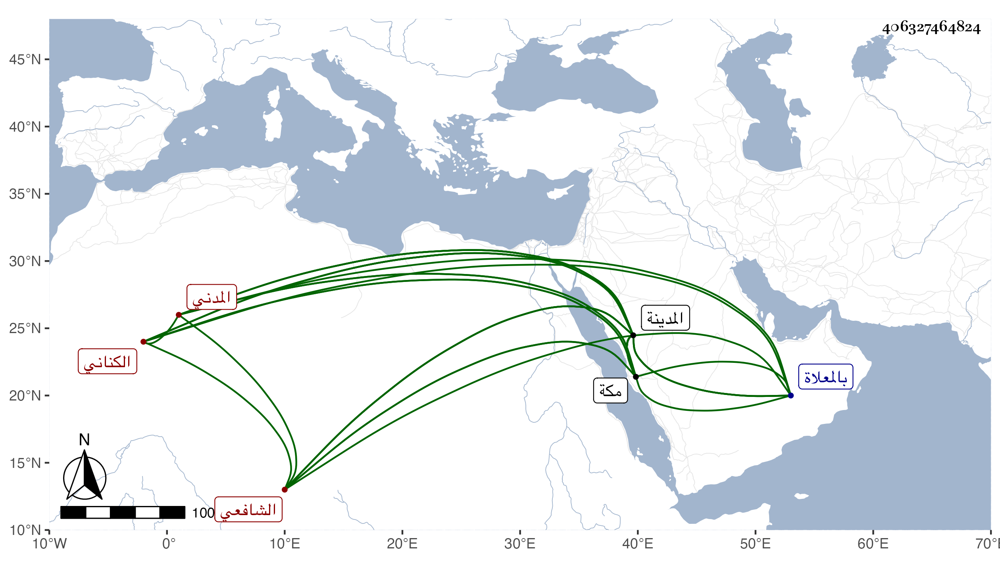

0902Sakhawi.DawLamic.ITO20230111-ara1.EIS1600.406327464824
Biography ID: 406327464824
243
محمد بن محمد بن صلح بن إسماعيل الشمس بن الشمس الكناني المدني الشافعي سبط البدر عبد الله بن محمد بن فرحون وأخو ناصر الدين عبد الرحمن ووالد عبد الوهاب الماضي بعدهم ويعرف بابن صلح . ولد سنة سبعين وسبعمائة بالمدينة ونشأ بها فحفظ القرآن وكتبا في فنون وتلا بالسبع أو بعضها على والده وأذن له في الاقراء وسمع على البدر بن الخشاب قاضي المدينة وغيره ، وأجاز له جماعة وناب عن أخيه في الحكم والخطابة والامامة بالمدينة وقرأ في البخاري على الشرف أبي بكر في سنة خمس وتسعين وسبعمائة وكان ذا نباهة في الفقه وغيره مع خير وديانة قدم مكة غير مرة للحج والعمرة منها في المحرم سنة أربع عشرة فأدركه أجله بها بعد قضاء نسكه في أول صفرها ودفن بالمعلاة . ذكره الفاسي في مكة .
